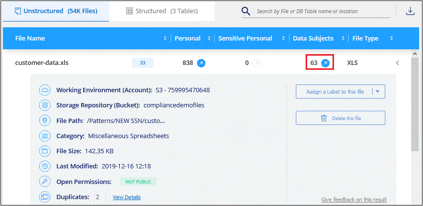

문서 변경 요청
문서 변경 요청 이 페이지 편집
이 페이지 편집 기여하는 방법 자세히 알아보기
기여하는 방법 자세히 알아보기조직에 저장된 데이터에 대한 규정 준수 세부 정보 보기
조직의 개인 데이터 및 민감한 개인 데이터에 대한 세부 정보를 확인하여 개인 데이터를 제어할 수 있습니다. Cloud Data Sense가 데이터에서 발견한 범주와 파일 형식을 검토하여 가시성을 확보할 수도 있습니다.

|
이 섹션에 설명된 기능은 데이터 소스에서 전체 분류 검사를 수행하도록 선택한 경우에만 사용할 수 있습니다. 매핑 전용 스캔이 있는 데이터 원본은 파일 수준 세부 정보를 표시하지 않습니다. |
기본적으로 Cloud Data Sense 대시보드에는 모든 작업 환경 및 데이터베이스의 규정 준수 데이터가 표시됩니다.

일부 작업 환경에 대한 데이터만 보려면 작업 환경을 선택합니다.
또한 데이터 조사 페이지에서 결과를 필터링하고 결과 보고서를 CSV 파일로 다운로드할 수도 있습니다. 을 참조하십시오 데이터 조사 페이지의 데이터 필터링 를 참조하십시오.
개인 데이터가 포함된 파일 보기
Cloud Data Sense는 데이터 내에서 특정 단어, 문자열 및 패턴(Regex)을 자동으로 식별합니다. 예를 들어 개인 식별 정보(PII), 신용 카드 번호, 주민 등록 번호, 은행 계좌 번호, 암호, 있습니다. "전체 목록을 참조하십시오".
또한 스캔할 데이터베이스 서버를 추가한 경우 Data Fusion 기능을 사용하여 파일을 스캔하여 데이터베이스의 고유 식별자가 해당 파일 또는 기타 데이터베이스에서 검색되는지 여부를 확인할 수 있습니다. 을 참조하십시오 "Data Fusion를 사용하여 개인 데이터 식별자를 추가합니다" 를 참조하십시오.
일부 개인 데이터 유형의 경우 데이터 센스에서 근접성 검증_을 사용하여 결과를 검증합니다. 유효성 검사는 발견된 개인 데이터 근처에서 하나 이상의 미리 정의된 키워드를 찾는 방식으로 수행됩니다. 예를 들어, 데이터 센스에서 미국을 식별합니다 주민등록번호(SSN) 옆에 근접 단어가 있는 경우 주민등록번호로 사용 — 예: _SSN_OR_Social security. "개인 데이터 표" 데이터 센스에서 근접 유효성 검사를 사용하는 경우를 표시합니다.
-
Cloud Manager 상단에서 * 데이터 감지 * 를 클릭하고 * 규정 준수 * 탭을 클릭합니다.
-
모든 개인 데이터에 대한 세부 정보를 조사하려면 개인 데이터 백분율 옆에 있는 아이콘을 클릭합니다.

-
특정 유형의 개인 데이터에 대한 세부 정보를 조사하려면 * 모두 보기 * 를 클릭한 다음 특정 유형의 개인 데이터(예: 전자 메일 주소)에 대한 * 조사 결과 * 아이콘을 클릭합니다.

-
특정 파일에 대한 세부 정보를 검색, 정렬, 확장하고 * 결과 조사 * 를 클릭하여 마스킹된 정보를 보거나 파일 목록을 다운로드하여 데이터를 조사합니다.

중요한 개인 데이터가 들어 있는 파일 보기
Cloud Data Sense는 와 같은 개인 정보 보호 규정에 정의된 대로 민감한 개인 정보의 특수한 유형을 자동으로 식별합니다 "GDPR 9조 및 10조". 예를 들어, 개인의 건강, 인종 또는 성적 취향과 관련된 정보를 제공합니다. "전체 목록을 참조하십시오".
Cloud Data Sense는 인공 지능(AI), 자연어 처리(NLP), 머신 러닝(ML) 및 코그니티브 컴퓨팅(CC)을 사용하여 엔터티를 추출하고 그에 따라 범주화하기 위해 검색하는 내용의 의미를 파악합니다.
예를 들어, 중요한 GDPR 데이터 범주 중 하나는 인종입니다. 데이터 센스는 NLP 기능으로 인해 "George is Mexican"(GDPR 제9조에 명시된 민감한 데이터 표시)과 "George is eating Mexican food"라는 문장의 차이를 구별할 수 있습니다.
|
|
민감한 개인 데이터를 검색할 때는 영어로만 지원됩니다. 더 많은 언어에 대한 지원은 나중에 추가됩니다. |
-
Cloud Manager 상단에서 * 데이터 감지 * 를 클릭하고 * 규정 준수 * 탭을 클릭합니다.
-
중요한 모든 개인 데이터에 대한 세부 정보를 조사하려면 중요한 개인 데이터 백분율 옆에 있는 아이콘을 클릭합니다.

-
특정 유형의 중요한 개인 데이터에 대한 세부 정보를 조사하려면 * 모두 보기 * 를 클릭한 다음 특정 유형의 중요한 개인 데이터에 대해 * 결과 조사 * 아이콘을 클릭합니다.

-
특정 파일에 대한 세부 정보를 검색, 정렬, 확장하고 * 결과 조사 * 를 클릭하여 마스킹된 정보를 보거나 파일 목록을 다운로드하여 데이터를 조사합니다.
범주별로 파일 보기
Cloud Data Sense는 스캔한 데이터를 다양한 유형의 범주로 나눕니다. 범주는 각 파일의 콘텐츠 및 메타데이터에 대한 AI 분석을 기반으로 하는 주제입니다. "범주 목록을 참조하십시오".
범주는 보유한 정보의 유형을 표시하여 데이터의 상태를 이해하는 데 도움이 됩니다. 예를 들어 이력서 또는 직원 계약과 같은 범주에는 중요한 데이터가 포함될 수 있습니다. 결과를 조사할 때 직원 계약이 안전하지 않은 위치에 저장되어 있는 것을 발견할 수 있습니다. 그런 다음 해당 문제를 해결할 수 있습니다.
|
|
영어, 독일어 및 스페인어가 범주에 지원됩니다. 더 많은 언어에 대한 지원은 나중에 추가됩니다. |
-
Cloud Manager 상단에서 * 데이터 감지 * 를 클릭하고 * 규정 준수 * 탭을 클릭합니다.
-
기본 화면에서 직접 상위 4개 범주 중 하나에 대한 * 조사 결과 * 아이콘을 클릭하거나 * 모두 보기 * 를 클릭한 다음 범주 중 하나에 대한 아이콘을 클릭합니다.

-
특정 파일에 대한 세부 정보를 검색, 정렬, 확장하고 * 결과 조사 * 를 클릭하여 마스킹된 정보를 보거나 파일 목록을 다운로드하여 데이터를 조사합니다.
파일 형식별로 파일 보기
Cloud Data Sense는 스캔한 데이터를 파일 형식별로 분해합니다. 파일 형식을 검토하면 특정 파일 형식이 올바르게 저장되지 않은 것을 발견할 수 있으므로 중요한 데이터를 제어하는 데 도움이 됩니다. "파일 형식 목록을 참조하십시오".
예를 들어 조직에 대한 매우 중요한 정보가 포함된 CAD 파일을 저장할 수 있습니다. 보안이 설정되지 않은 경우 사용 권한을 제한하거나 파일을 다른 위치로 이동하여 중요한 데이터를 제어할 수 있습니다.
-
Cloud Manager 상단에서 * 데이터 감지 * 를 클릭하고 * 규정 준수 * 탭을 클릭합니다.
-
기본 화면에서 직접 상위 4개 파일 유형 중 하나에 대한 * 조사 결과 * 아이콘을 클릭하거나 * 모두 보기 * 를 클릭한 다음 파일 유형에 대한 아이콘을 클릭합니다.

-
특정 파일에 대한 세부 정보를 검색, 정렬, 확장하고 * 결과 조사 * 를 클릭하여 마스킹된 정보를 보거나 파일 목록을 다운로드하여 데이터를 조사합니다.
파일 메타데이터 보기
데이터 조사 결과 창에서 을(를) 클릭할 수 있습니다  모든 단일 파일에서 파일 메타데이터를 볼 수 있습니다.
모든 단일 파일에서 파일 메타데이터를 볼 수 있습니다.

파일이 있는 작업 환경과 볼륨을 보여 주는 것 외에도 메타데이터는 파일 권한, 파일 소유자, 이 파일의 중복 여부 및 할당된 AIP 레이블(있는 경우)을 비롯하여 훨씬 더 많은 정보를 표시합니다 "클라우드 데이터 센스에 AIP가 통합되어 있습니다")를 클릭합니다. 이 정보는 를 계획 중인 경우에 유용합니다 "정책을 생성합니다" 데이터를 필터링하는 데 사용할 수 있는 모든 정보를 볼 수 있기 때문입니다.
모든 데이터 원본에 대해 모든 정보를 사용할 수 있는 것은 아니며 해당 데이터 원본에 적합한 정보일 뿐입니다. 예를 들어 볼륨 이름, 권한 및 AIP 레이블은 데이터베이스 파일과 관련이 없습니다.
단일 파일의 세부 정보를 볼 때 파일에 대해 수행할 수 있는 몇 가지 작업이 있습니다.
-
파일을 NFS 공유로 이동하거나 복사할 수 있습니다. 을 참조하십시오 "소스 파일을 NFS 공유로 이동하는 중입니다" 및 "소스 파일을 NFS 공유에 복사하는 중입니다" 를 참조하십시오.
-
파일을 삭제할 수 있습니다. 을 참조하십시오 "원본 파일을 삭제하는 중입니다" 를 참조하십시오.
-
파일에 특정 상태를 할당할 수 있습니다. 을 참조하십시오 "태그 적용 중" 를 참조하십시오.
-
파일을 Cloud Manager 사용자에게 할당하여 파일에 대해 수행해야 하는 후속 작업을 책임질 수 있습니다. 을 참조하십시오 "파일에 사용자 할당" 를 참조하십시오.
-
AIP 레이블을 Cloud Data Sense와 통합한 경우 이 파일에 레이블을 지정하거나 이미 있는 경우 다른 레이블로 변경할 수 있습니다. 을 참조하십시오 "AIP 레이블을 수동으로 할당합니다" 를 참조하십시오.
파일에 대한 권한 보기
파일에 대한 액세스 권한이 있는 모든 사용자 또는 그룹의 목록과 사용 권한 유형을 보려면 * 모든 권한 보기 * 를 클릭합니다. 이 버튼은 CIFS 공유, SharePoint, OneDrive에 있는 파일에만 사용할 수 있습니다.

사용자 또는 그룹의 이름을 클릭하면 "사용자/그룹 권한" 필터에 해당 사용자 또는 그룹의 이름과 함께 조사 페이지가 표시되어 사용자 또는 그룹이 액세스할 수 있는 모든 파일을 볼 수 있습니다.
사용자 및 그룹 이름 대신 SID(보안 식별자)가 표시되는 경우 Active Directory를 데이터 센스에 통합해야 합니다. "이 작업을 수행하는 방법을 확인하십시오".
스토리지 시스템에서 중복 파일을 확인하는 중입니다
중복 파일이 스토리지 시스템에 저장되어 있는지 확인할 수 있습니다. 이 기능은 저장 공간을 절약할 수 있는 영역을 확인하고자 할 때 유용합니다. 또한 특정 사용 권한이나 중요한 정보가 있는 특정 파일이 스토리지 시스템에서 불필요하게 복제되지 않도록 하는 것이 도움이 될 수 있습니다.
중복 파일 목록을 다운로드하여 스토리지 관리자에게 전송하여 삭제할 수 있는 파일이 있는지 확인할 수 있습니다. 아니면 가능합니다 "파일을 삭제합니다" 특정 버전의 파일이 필요하지 않을 경우
복제된 모든 파일을 봅니다
작업 환경 및 스캔할 데이터 원본에 중복되는 모든 파일의 목록을 보려면 데이터 조사 페이지에서 * 중복 > 중복 항목 있음 * 이라는 필터를 사용하면 됩니다.
최소 크기가 50MB이고 개인 정보 또는 민감한 개인 정보가 포함된 모든 파일 형식(데이터베이스 제외)의 중복 파일이 결과 페이지에 표시됩니다.
특정 파일이 중복되어 있는지 확인합니다
단일 파일에 중복이 있는지 확인하려면 데이터 조사 결과 창에서 을(를) 클릭합니다  모든 단일 파일에서 파일 메타데이터를 볼 수 있습니다. 특정 파일의 복제본이 있는 경우 이 정보는 Duplicates 필드 옆에 표시됩니다.
모든 단일 파일에서 파일 메타데이터를 볼 수 있습니다. 특정 파일의 복제본이 있는 경우 이 정보는 Duplicates 필드 옆에 표시됩니다.
중복 파일 목록과 파일이 있는 위치를 보려면 * 세부 정보 보기 * 를 클릭합니다. 다음 페이지에서 * 중복 보기 * 를 클릭하여 조사 페이지에서 파일을 봅니다.


|
이 페이지에 제공된 "파일 해시" 값을 사용하여 조사 페이지에 직접 입력하여 특정 중복 파일을 언제든지 검색하거나 정책에 사용할 수 있습니다. |
특정 작업 환경에 대한 대시보드 데이터 보기
Cloud Data Sense 대시보드의 콘텐츠를 필터링하여 모든 작업 환경 및 데이터베이스에 대한 규정 준수 데이터를 확인하거나 특정 작업 환경에 대한 규정 준수 데이터를 확인할 수 있습니다.
대시보드를 필터링할 때 데이터 센스에서 규정 준수 데이터와 보고서의 범위를 선택한 작업 환경만으로 설정합니다.
-
필터 드롭다운을 클릭하고 데이터를 보려는 작업 환경을 선택한 다음 * 보기 * 를 클릭합니다.

데이터 조사 페이지의 데이터 필터링
조사 페이지의 내용을 필터링하여 원하는 결과만 표시할 수 있습니다. 내용을 구체화된 후 CSV 버전의 콘텐츠를 보고서로 저장하려면 을 클릭합니다  단추를 클릭합니다.
단추를 클릭합니다.

-
최상위 탭을 사용하면 파일(비정형 데이터) 또는 데이터베이스(구조화된 데이터)의 데이터를 볼 수 있습니다.
-
각 열의 맨 위에 있는 컨트롤을 사용하여 결과를 숫자 또는 사전순으로 정렬할 수 있습니다.
-
왼쪽 창 필터를 사용하면 다음 속성 중에서 선택하여 결과를 구체화할 수 있습니다.
필터 세부 정보 정책
정책 또는 정책을 선택합니다. 이동 "여기" 기존 정책 목록을 보고 고유한 정책을 만들려면
사용 권한을 엽니다
사용 권한 유형을 선택합니다
사용자/그룹 권한
사용자 이름 또는 그룹 이름 또는 부분 이름을 입력합니다
파일 소유자
파일 소유자 이름을 입력합니다
라벨
AIP 레이블을 선택합니다
작업 환경 유형
작업 환경의 유형을 선택합니다. OneDrive와 SharePoint는 "클라우드 앱"으로 분류됩니다.
작업 환경 이름
특정 작업 환경을 선택합니다
저장소 저장소
볼륨 또는 스키마와 같은 스토리지 리포지토리를 선택합니다
파일 경로
부분 경로 또는 전체 경로를 입력합니다
범주
를 선택합니다 "범주 유형"
감도 수준
감도 수준을 선택합니다
개인 데이터
를 선택합니다 "개인 데이터의 유형입니다"
민감한 개인 데이터
를 선택합니다 "중요한 개인 데이터의 유형"
데이터 제목
데이터 주체의 전체 이름 또는 알려진 식별자를 입력합니다
파일 형식
를 선택합니다 "파일 유형"
파일 크기
파일 크기 범위를 선택합니다
만든 시간
파일이 생성된 범위를 선택합니다
검색된 시간
Data Sense가 파일을 검색할 때 범위를 선택합니다
마지막 수정
파일이 마지막으로 수정된 범위를 선택합니다
마지막 액세스
파일을 마지막으로 액세스한 범위를 선택합니다. 데이터 센스에서 스캔하는 파일 유형의 경우, 데이터 센스에서 파일을 스캔한 마지막 시간입니다.
중복
파일이 리포지토리에서 복제되는지 여부를 선택합니다
파일 해시
파일 해시를 입력하여 이름이 다르더라도 특정 파일을 찾습니다
태그
태그를 선택합니다
할당 대상
파일이 할당된 사람의 이름을 선택합니다
-
필터 창 상단의 _Policies_filter에는 저장된 데이터베이스 쿼리 또는 즐겨찾기 목록과 같이 일반적으로 요청된 필터 조합을 제공하는 사용자 지정 필터가 나열됩니다. 이동 "여기" 미리 정의된 정책 목록을 보고 사용자 지정 정책을 만드는 방법을 확인합니다.
각 파일 목록 보고서(CSV 파일)에 포함된 내용
각 조사 페이지에서 을(를) 클릭할 수 있습니다 버튼을 클릭하여 식별된 파일에 대한 세부 정보가 포함된 파일 목록(CSV 형식)을 다운로드합니다. Data Sense가 정형(데이터베이스 테이블) 데이터와 비정형(파일) 데이터를 모두 스캔하는 경우 다운로드한 ZIP 파일에 두 개의 보고서가 포함되어 있습니다.
10,000개가 넘는 결과가 있는 경우 최상위 10,000개만 목록에 표시됩니다.
비정형 데이터 보고서 * 에는 다음 정보가 포함됩니다.
-
파일 이름입니다
-
위치 유형
-
작업 환경 이름입니다
-
스토리지 저장소(예: 볼륨, 버킷, 공유)
-
작업 환경 유형입니다
-
파일 경로
-
파일 형식
-
파일 크기
-
만든 시간
-
마지막 수정
-
마지막 액세스
-
파일 소유자
-
범주
-
개인 정보
-
민감한 개인 정보
-
삭제 감지 날짜입니다
삭제 감지 날짜는 파일이 삭제되거나 이동된 날짜를 나타냅니다. 이렇게 하면 중요한 파일이 이동된 시기를 식별할 수 있습니다. 삭제된 파일은 대시보드나 조사 페이지에 나타나는 파일 번호 개수에 포함되지 않습니다. 파일은 CSV 보고서에만 나타납니다.
Structured Data Report * 에는 다음 정보가 포함됩니다.
-
DB 테이블 이름입니다
-
위치 유형
-
작업 환경 이름입니다
-
스토리지 저장소(예: 스키마)
-
열 개수
-
행 수
-
개인 정보
-
민감한 개인 정보